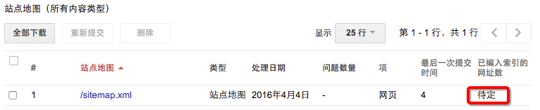

更换收藏夹图标
这个跟主题其实没有关系，只是因为属于样式的自定义，所以放在这里说明。在 hexo/source 目录下放上你的收藏夹图标，命名为favicon.ico即可，建议尺寸为 32*32。
还可以在这里添加苹果设备图标，命名为apple-touch-icon.png，建议尺寸为 120*120。
Front-matter
Front-matter 是 heox 创建的 page、post、draft 等文件的头部区域，例如：
|
预定义参数
| 参数 | 描述 | 默认值 |
|---|---|---|
| layout | hexo 布局 | |
| title | 标题 | |
| date | 建立日期 | 文件建立日期 |
| updated | 更新日期 | 文件更新日期 |
| comments | 开启文章的评论功能 | true |
| tags | 标签（不适用于分页） | |
| categories | 分类（不适用于分页） | |
| permalink | 覆盖文章网址 |
除此之外，还有一些主题支持的参数：
显示文章目录
在文章的 Front-matter 中添加toc: true就可以让该篇文章显示目录，可以修改 hexo/scaffolds/post.md 模板文件，这样之后创建的文章默认都显示文章目录。
|
设置文章摘要
设置文章摘要有两种方法：
在 Front-matter 指定 description，如：
title: Hello Worlddate: 2013-11-22 17:11:54description: 你对本页的描述在正文使用
<!--more-->作为摘要的结束标记以上是摘要<!--more-->以下是剩下的全文
在有需要指定摘要的情况下，个人建议使用方案 2，可以不用另外写摘要，也可以指定摘要的长度，当然如果摘要并不是文章开头的内容，那就只能使用方案 1 了。
支持Google搜索
添加站点地图插件
cnpm install hexo-generator-sitemap --save修改 hexo 配置
Plugins:- hexo-generator-sitemapsitemap:path: sitemap.xml重新生成文件后访问 http://localhost:4000/sitemap.xml
hexo cleanhexo ghexo s向 Google 提交站点地图
- 在 Google 的网站管理员中心点击“添加属性”，输入你的站点，并接续。
- 根据提示验证网站的所有权，注意此处如果选择上传一个html文件进行验证操作，不要通过 hexo 上传，hexo 会修改 Google 指定的文件，导致验证失败。
- 在Search Console页面找到刚添加的网站

- 上传站点地图

- 等待 Google 审核，大概1天到3天~，审核通过之前，先把搜索框隐藏吧。

支持百度搜索
添加站点底图插件
cnpm install hexo-generator-baidu-sitemap --save修改 hexo 配置
Plugins:- hexo-generator-baidu-sitemapbaidusitemap:path: baidusitemap.xml向百度提交站点底图
自定义 404 页面
在 hexo/source 目录下创建 404.html 文件 或者 404.md 文件，以 404.html 为例接入腾讯404公益广告。
支持 RSS 订阅
安装hexo-generator-feed
cnpm install hexo-generator-feed --save修改 hexo 配置
plugin:- hexo-generator-feedfeed:type: atompath: atom.xmllimit: 20其中，feed 配置是可选项
修改主题配置
- page: rssdirectory: atom.xmlicon: fa-rss
maupassant 自定义
maupassant 中文介绍
主题的配置文件路径为hexo/themes/maupassant/_config.yml
hexo 配置路径为hexo/_config.yml
本地搜索
- 修改主题配置，显示本地搜索框
|
|
搜索引擎
显示 Google 搜索框
修改主题的配置，显示 Google 搜索框，注意显示搜索框之前需要先支持Google搜索
google_search: true ## Use Google search, true/false.显示百度搜索框
修改主题的配置，显示百度搜索框，注意显示搜索框之前要先支持百度搜索
baidu_search: true ## Use Baidu search, true/false.修改默认的搜索框占位符
如果同时支持多种搜索引擎，可以修改search.jade文件中对应的搜索框占位符以区分不同的搜索引擎。
Google Analytics
- 使用 Google 帐号登录 Google Analytics
- 根据提示进行注册操作，完成注册后通过 管理 - 选择用户 - 选择媒体 - 跟踪信息 - 跟踪代码 可以查到
跟踪 ID - 修改主题配置，设置
google_analyticsgoogle_analytics: ## Your Google Analytics tracking id, e.g. UA-42425684-2
百度 Analytics
- 登录或注册百度统计
根据提示创建网站，获取百度 Analytics ID
修改主题配置，设置
baidu_analyticsbaidu_analytics: ## Your Baidu Analytics tracking id, e.g. 8006843039519956000重新发布博客
验证统计正常安装
支持 Disqus 评论
对多说和 Disqus 做了一些对比，国内而言，多说会快一些，不过产品似乎不太稳定，偶尔会抽风，目前的维护力度似乎也不到位， Disqus 速度会慢些，有被墙的风险，使用门槛相对也比较高。虽然 Disqus 门槛高些，最终还是决定试用看看。
- 注册帐号 Disqus 帐号，可以如果有 Gmail 的话，可以快速登录
- 验证邮箱后完善个人信息
- 在
Setting - Add Disqus To Site入口进入配置页面，根据引导创建Choose your unique Disqus URL 修改主题配置，开启 Disqus 评论功能，填入第 3 步创建的 shortname 即可
disqus: ## true ## Your disqus_shortname, e.g. username如果需要关闭部分文章的评论功能，可以在文章或 page 的 Front-matter，添加配置
comments: false
参考